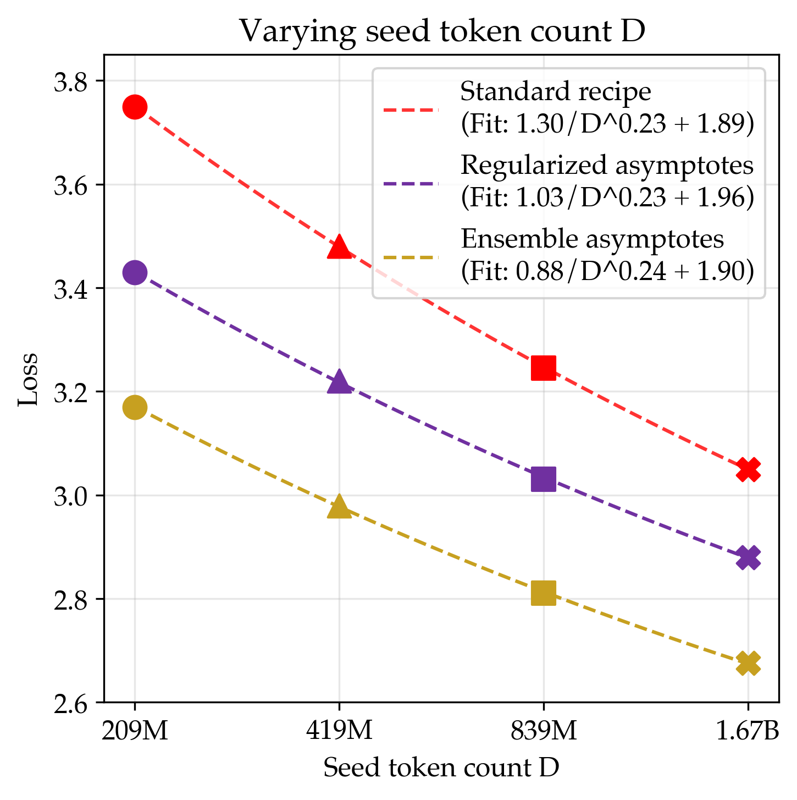

11/8/2025
I've recently been interested in what algorithm learns the best from limited samples when given unlimited compute. In this regime, we are willing to continue improving performance by increasing the parameter count of our model (with appropriate regularization). Since we are now unbound by parameters and function families, we enter the realm of nonparametric statistics (as observed by my advisors).
One striking empirical phenomenon is that under the infinite parameter limit, multiple algorithms share the same data scaling exponent and asymptote, visualized in Figure 1. If the exponents and asymptotes are actually equivalent between two algorithms, it suggests that an improvement in data efficiency is constant across all token counts, allowing one to iterate at smaller scales. It is unsurprising that the asymptote is the same, considering that the loss of most reasonable learning algorithms under both infinite compute and data approach their lowest possible value, i.e., the entropy of the data generating process. However, the alignment in the exponents suggests a deeper similarity between all of the methods.

In the context of nonparametric statistics, one of the simplest generative modeling algorithms is Kernel Density Estimation (KDE), which estimates the data generating process as a mixture of kernel distributions centered around each data point. Interestingly, the choice of kernel does not strongly affect the exponent of the data scaling rate and only affects the constant factor. This is interesting since it implies our empirical results, and this post will show a classic bound on the asymptotic data efficiency of KDE, closely following the exposition in Tysbakov et al, 2003 and the motivation in Bahri et al, 2021 and Spigler et al, 2019.
Suppose we have a ground truth data distribution $p$ that we would like to learn given $n$ samples $X_{i\in[n]}$ (for simplicity, we will operate in one dimension). For these samples, the kernel density estimator will approximate $p$ as
$$\kde{x} = \frac{1}{nh} \sum_{i\in[n]} K\p{\frac{X_i - x}{h}}$$
for a choice of kernel function $K$ (integrating to $1$) and bandwidth parameter $h$. There are many choices for the kernel: common choices include a constant interval or a Gaussian. The bandwidth parameter $h$ controls whether the KDE sticks to the data or smooths out uncertainty. We will find that the optimal setting of this parameter depends on the amount of available data, decreasing as $n$ increases.
We are interested in the performance of the KDE characterized by the mean squared error (MSE) evaluated at a fixed point $x$:
$$\MSE = \Eof{X_{i\in[n]}\sim p}{(\kde{x} - p(x))^2}$$
We can decompose this risk into bias and variance as follows
\begin{aligned} MSE &= \underbrace{\p{\Eof{X_{i\in[n]}\sim p}{\kde{x}} - p(x)}^2}_{\text{Squared bias: }b^2(x)} \\ &+ \underbrace{\Eof{X_{i\in[n]}\sim p}{\p{\kde{x} - \Eof{X_{i\in[n]}\sim p}{\kde{x}}}^2}}_{\text{Variance: }\sigma^2(x)} \end{aligned}
We can now separately solve for the bias and variance to characterize the full loss.
We will start by bounding the variance. For this, we will assume that the true density $p$ is bounded above by $p_{\text{max}}$ and that $\int K^2(u)du < \infty$.
First define $\eta_i(x) = K\p{\frac{X_i - x}{h}} - \Eof{X\sim p}{K\p{\frac{X - x}{h}}}$. Since each $\eta_i(x)$ is iid with mean zero, we can rewrite the variance as
\begin{aligned} & \sigma^2(x) \\ & = \Eof{X_{i\in[n]}\sim p}{\p{\kde{x} - \Eof{X_{i\in[n]}\sim p}{\kde{x}}}^2} && \text{[variance definition]} \\ & = \Eof{X_{i\in[n]}\sim p}{\p{\frac{1}{nh}\sum_{i\in[n]}\eta_i(x)}^2} && \text{[$\mu_i$ definition]} \\ & = \Eof{X_{i\in[n]}\sim p}{\sum_{i\in[n]}\p{\frac{1}{nh}\eta_i(x)}^2} && \text{[$\mu_i$ independent]} \\ & = \frac{1}{nh^2}\Eof{X_{1}\sim p}{\eta_1(x)^2} && \text{[$\mu_i$ identical]}\\ \end{aligned}
It now suffices to bound $\Eof{X_{1}\sim p}{\eta_1(x)^2}$, or the variance of the kernel centered around $X_1$.
\begin{aligned} & \Eof{X_1\sim p}{\p{\eta_1(x)}^2} \\ & = \Eof{X_1\sim p}{\p{K\p{\frac{X_1 - x}{h}} - \Eof{X\sim p}{K\p{\frac{X - x}{h}}}}^2} && \text{[definition]} \\ & = \Eof{X_1\sim p}{\p{K\p{\frac{X_1 - x}{h}}}^2} - \Eof{X\sim p}{K\p{\frac{X - x}{h}}}^2 && \text{[rewriting variance]}\\ & \leq \Eof{X_1\sim p}{\p{K\p{\frac{X_1 - x}{h}}}^2} && \text{[keep first term]} \\ & = \int_{z}\p{K\p{\frac{z - x}{h}}}^2 p(z)dz && \text{[convert to integral]} \\ & = p_{\text{max}}\int_{z}\p{K\p{\frac{z - x}{h}}}^2 dz && \text{[bounded density]} \\ & = p_{\text{max}} h \int_{u}\p{K\p{u}}^2 du && \text{[sub $z = x + uh$]} \\ \end{aligned}
By our assumptions, we have that $p_{\text{max}}\int_{u}\p{K\p{u}}^2 du$ is bounded by a constant, say $C_1$. Putting it all together, we get that
$$\boxed{\sigma^2(x) \leq \frac{C_1}{nh}}$$
Now on to the harder quantity. At a high level, we will find that the bias of the estimator is controlled by the smoothness of the underlying data distribution. We start by making two assumptions.
Assumption 1. Define Hölder class $\Sigma(\beta, L)$ as the set of $l = \lfloor\beta\rfloor$ times differentiable functions $f$ whose derivative $f^{(l)}$ satisfies
$$|f^{(l)}(x) - f^{(l)}(x')| \leq L |x - x'|^{\beta-l}$$
We assume that $f$ is Hölder $\Sigma(\beta, L)$. To offer some intuition about how this quantifies the smoothness of the function, we note that this allows us to decompose $f(x+h)$ as a degree $l$ polynomial Taylor expansion around $x$ along with an error term on the order of $|h|^\beta$. Therefore, functions $f$ with a higher $\beta$ tend to be smoother.
Assumption 2. A kernel is order $l$ if
$$\forall j \in [l],\; \int u^j K(u) du = 0$$
We will assume that our choice of kernel is order $l = \lfloor\beta\rfloor$. There appears to be a construction for arbitrary order kernels using Legendre polynomials (I did not further look into this matter). We will additionally assume that $\int u^\beta K(u) du$ is bounded above by a constant.
With our (pretty strong) assumptions in place, we can finally do math. As a brief proof sketch, since the kernel is order $l$, it will cancel out the degree $l$ polynomial appearing in the Taylor expansion of $f$, leaving behind an error term on the order of $h^\beta$. Now, for the calculation.
\begin{aligned} & b(x) \\ &= \Eof{X_{i\in[n]}\sim p}{\kde{x}} - p(x) && \text{[bias definition]} \\ &= \Eof{X_{i\in[n]}\sim p}{\frac{1}{nh} \sum_{i\in[n]} K\p{\frac{X_i - x}{h}}} - p(x) && \text{[KDE definition]} \\ &= \frac{1}{h}\int_z K\p{\frac{z - x}{h}}p(z)dz - p(x) && \text{[$X_i$ i.i.d.]}\\ &= \int_u K(u)p(x + uh)du - p(x) && \text{[sub $z = x + uh$]}\\ &= \int_u K(u)\p{p(x + uh) - p(x)}du && \text{[$\int_u K(u) du = 1$]}\\ &= \int_u K(u)\p{\sum_{j\in[l-1]} \frac{(uh)^j}{j!}p^{(j)}(x) + \frac{(uh)^l}{l!}p^{(l)}(x + \tau uh)}du && \text{[Taylor expansion, $\tau \in [0,1]$]}\\ &= \int_u K(u)\frac{(uh)^l}{l!}p^{(l)}(x + \tau uh)du && \text{[kernel order $1$ to $l-1$]}\\ &= \int_u K(u)\frac{(uh)^l}{l!}\p{p^{(l)}(x + \tau uh)-p^{l}(x)}du && \text{[kernel order $l$]}\\ & \phantom{.} \\ & |b(x)| \\ &\leq \int_u |K(u)|\frac{|uh|^l}{l!}\left|p^{(l)}(x + \tau uh)-p^{l}(x)\right|du && \text{[absolute value]} \\ &\leq L \int_u |K(u)|\frac{|uh|^l}{l!}\left|\tau uh\right|^\beta du && \text{[Hölder]}\\ &\leq C_2 h^\beta\\ \end{aligned}
Phew. This gives our final bound on the squared bias as
$$\boxed{b^2(x) \leq C_2^2 h^{2\beta}}$$
We can compose our bias and variance bounds for the following bound on the MSE:
$$\text{MSE} \leq \underbrace{C_2^2 h^{2\beta}}_{\text{Squared bias: }b^2(x)} + \underbrace{\frac{C_1}{nh}}_{\text{Variance: }\sigma^2(x)}$$
Note that the bandwidth parameter has opposite effects on each term: a low bandwidth leads to high variance and causes undersmoothing, whereas a high bandwidth leads to high bias and causes oversmoothing. As $n$ increases, a high bandwidth is unnecessary to reduce the variance, naturally resulting in a decreasing bandwidth as sample count increases.
To balance the bias-variance tradeoff, we want to pick an intermediate value of $h$. We can solve this to find that we should set $h = O\p{n^{\frac{-1}{2\beta+1}}}$ to achieve the following bound:
$$\boxed{\text{MSE} = O\p{n^{-\frac{2\beta}{2\beta+1}}}}$$
Obviously, there have been many assumptions and crude bounds made until this point. However, taking this theorem at face value, the scaling exponent of KDE depends only on the smoothness of the function. Factors such as the choice of kernel impact the constant in the theorem, offering some intuition for why different learning algorithms might share scaling exponents but not constants.
Hopefully this derivation offers insight into why different algorithms (i.e. different kernel choices) can lead to consistent scaling of equal rate. Though we picked kernel density estimation, similar arguments hold for other nonparametric algorithms such as $k$ nearest neighbors. Arguments of this flavor have been used in a couple of papers to provide theoretical models explaining the origin of scaling exponents under the infinite parameter limit (Bahri et al, 2021, Spigler et al, 2019). Thank you for reading, and feel free to reach out with any questions or thoughts!